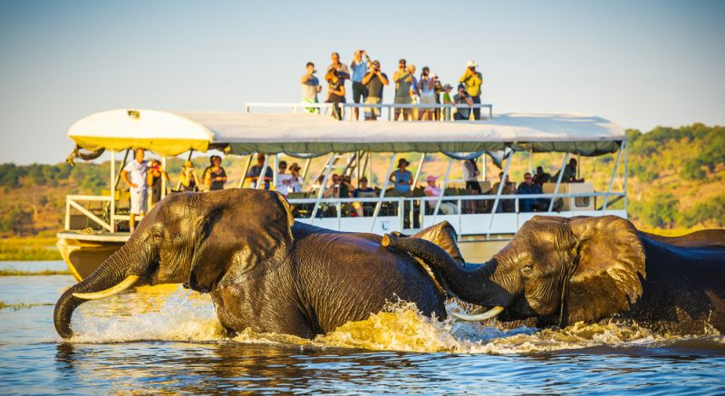
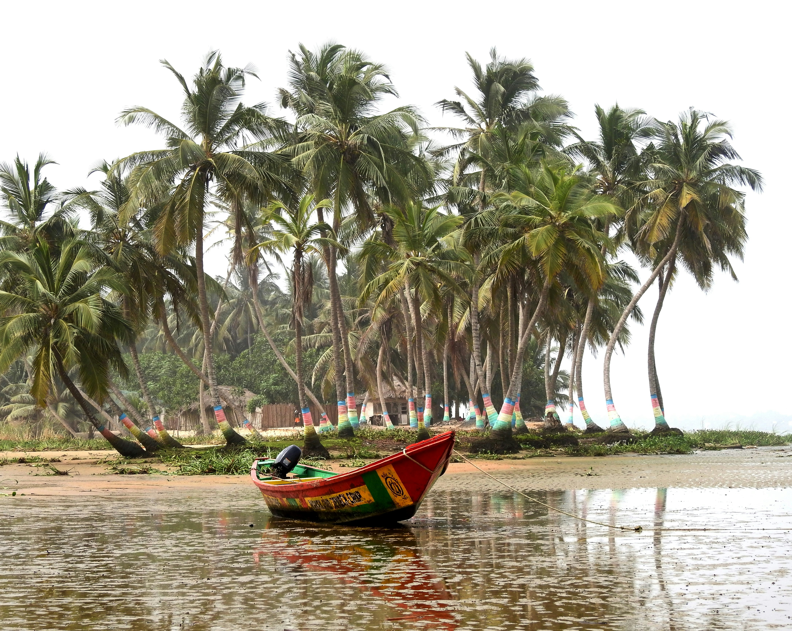

West Africa
Explore Ghana

The world's most ancient continent holds thousands of untold stories.
Walk its trails. Feel its roots. Carry its legacy.
The African Trail is your guide to the continent's most sacred destinations, timeless traditions, and unforgettable cultural experiences — curated by people who call Africa home.
Four corners of a continent. Thousands of years of living heritage.

Beyond the safaris and the sunsets lies a continent of extraordinary intellectual, spiritual, and artistic legacy. From the libraries of Timbuktu to the rock churches of Lalibela — every stone has a story.
Stories passed through generations that no textbook has captured.
Pyramids, great walls, and ancient cities built without modern tools.
Traditions still practiced today — festivals, rites, and ceremonies.
Not a tourist directory. A living guide to what Africa truly is.
Go beyond brochures. Every destination comes with cultural context, oral histories, and local wisdom passed down through generations.
Navigate heritage sites, sacred grounds, and cultural landmarks with trails curated by African-born guides who know each path intimately.
Read stories and accounts from a growing community of global explorers — each one a trail that has already been walked and can be yours.
Africa speaks thousands of languages. Our guides are being built in English, French, Swahili, Hausa, and Yoruba — and growing every month.
Photography and documentary film made by Africans, for the world. See the continent through eyes that have lived it, not just visited.
Every trail is reviewed by heritage custodians, local historians, and cultural experts. No content goes live without African validation.

Africa is not a destination —— Amara Osei, Heritage traveller, Accra
it is a homecoming. Every trail here
leads deeper into who we all are.
Join thousands of explorers navigating Africa's ancient heritage. Create a free account and pick your first destination today.
